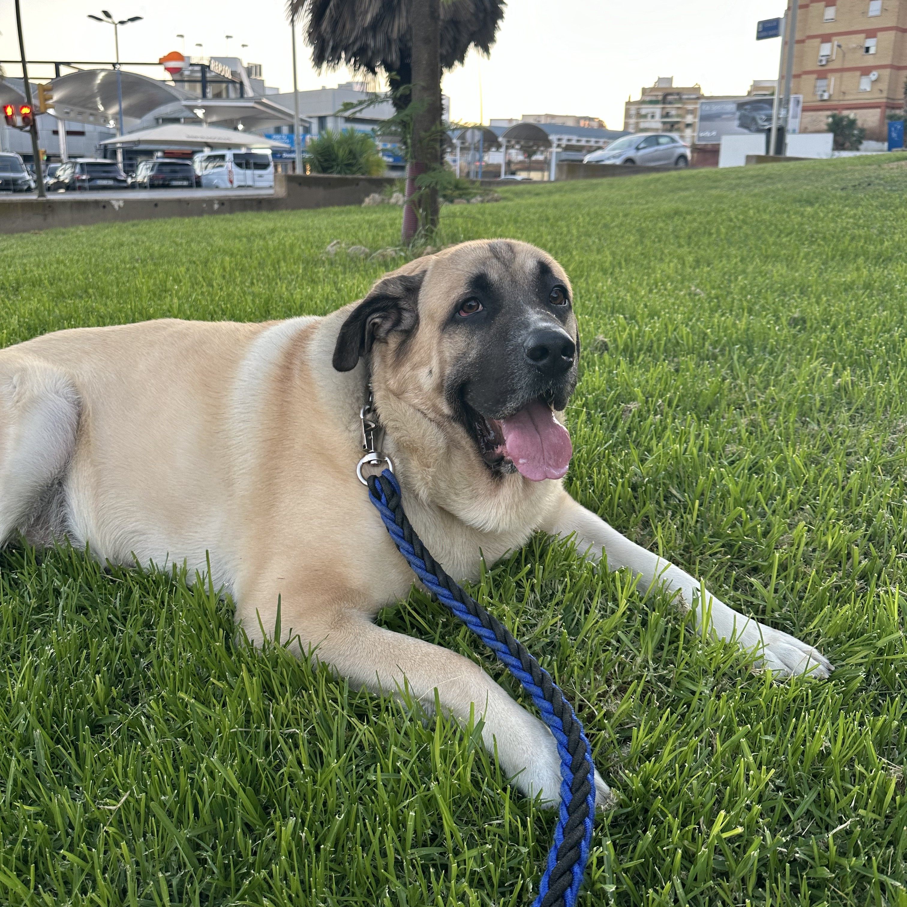
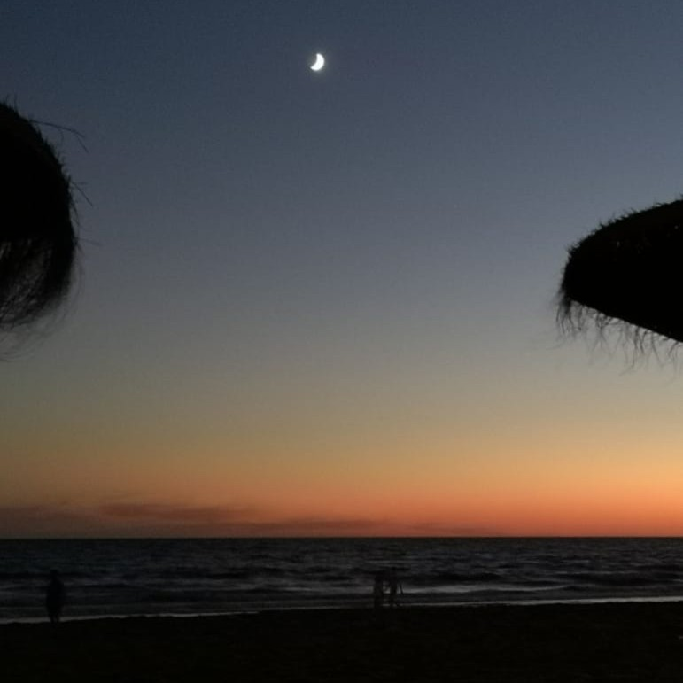
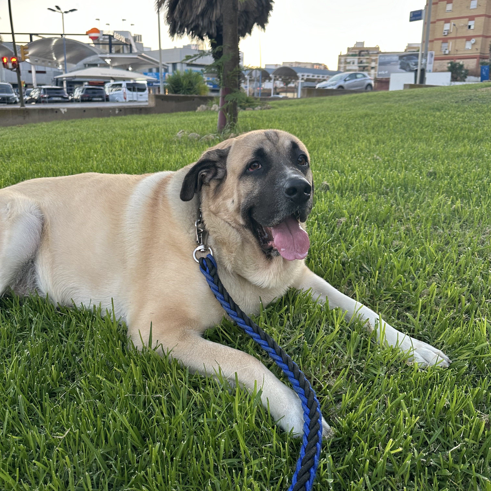
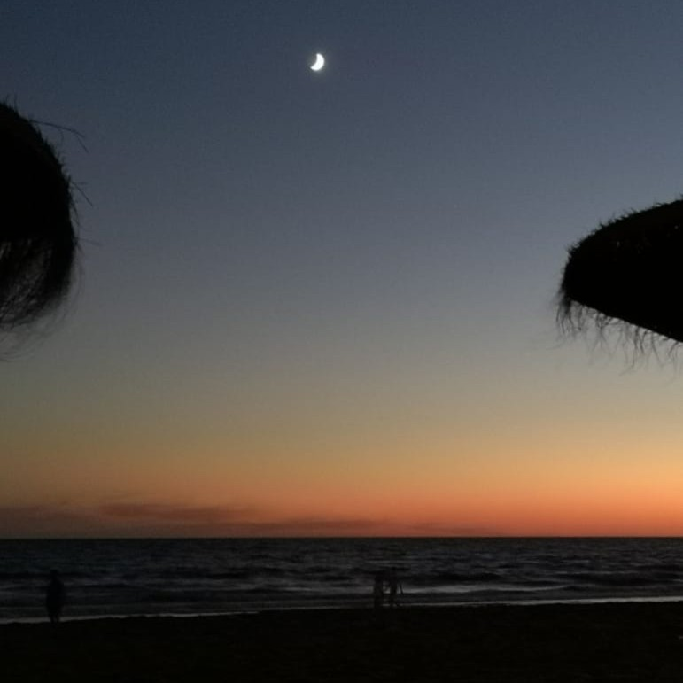

Galería de Imágenes
A continuación os muestro algunas fotografías personales, con gente que me importa o con cosas que me interesan. En la primera foto aparezco con mi pareja, él es mi compañero y mi mejor amigo. En la segunda foto aparece mi perro, que es el ser al que más quiero, se llama Horus. Y por último, en la tercer foto se ve la playa, que es mi lugar favorito en el mundo, además de noche. Allí se respira paz.
 


